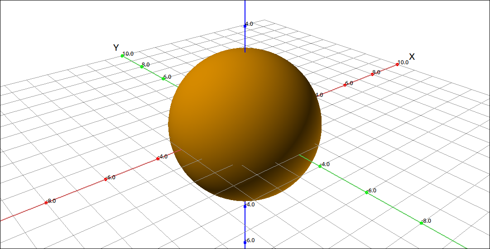
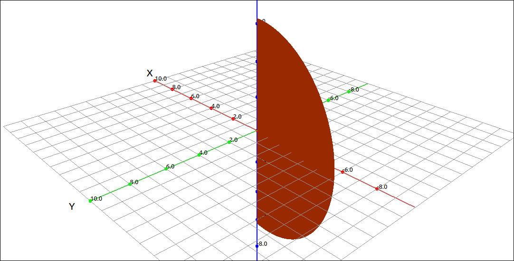
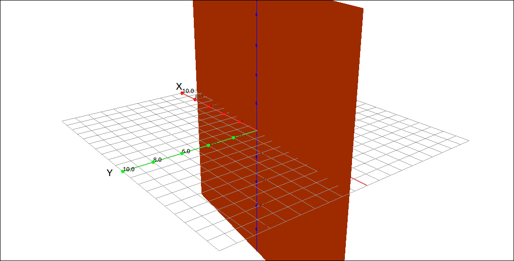
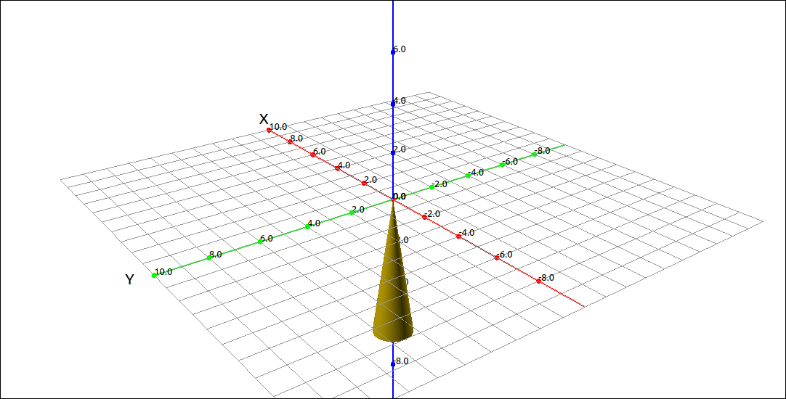

Spherical Coordinates#
Discussion & Definitions#
Cylindrical and spherical coordinates are simply another way to represent points in three dimensions, similar to the way we used polar coordinates to represent points in two dimensions. These coordinate systems have many applications in mathematics and physics as well as other areas, such as. computer graphics. In these tutorials, the main use will be to convert multiple integrals from a difficult computation to a much easier computation that gives the same result.
Cylindrical coordinates are when we write one of the three coordinate planes in polar coordinates (usually the xy-plane) and we let the third coordinate stay linear. Spherical coordinates are when we represent a point by looking at its position on a sphere that is centered at the origin.
Definition: Spherical Coordinates
In the spherical coordinate system, a point P in space is represented by the ordered triple \((\rho, \theta, \varphi)\) where
\(\rho\) is the distance from the point P to the origin O.
\(\theta\) is the angle made with the positive x-axis and the projection of the line segment \(OP\) to the xy-plane.
\(\varphi\) is the angle made with the positive z-axis and the line segment \(OP\), we usually restrict \(0 \leq \varphi \leq \pi.\)

Spherical Coordinates#
Conversion between spherical coordinates and Cartesian coordinates is not too difficult but it is not as straightforward as with cylindrical coordinates but the derivations are not too complex.
Theorem: Conversion between Spherical and Cartesian Coordinates
Given a point P whose rectangular coordinates are \((x, y, z)\) and spherical coordinates are \((\rho, \theta, \varphi)\) then the conversion between the two is as follows.
and
We can continue our correspondences by examining the conversion between spherical and cylindrical coordinates.
Theorem: Conversion between Spherical and Cylindrical Coordinates
Given a point P whose cylindrical coordinates are \((r, \theta, z)\) and spherical coordinates are \((\rho, \theta, \varphi)\) then the conversion between the two is as follows.
and

Coordinate Systems#
Example: Constant Functions in Spherical Coordinates#
In this example we will be graphing constant functions in spherical coordinates. This can take one of three forms, \(\rho = c\), \(\theta = c\), and \(\varphi = c\).
CLAE#
In CLAE, we can convert between the three cases easily by editing the properties. Input 3 into the CAS, click and drag this over to the 3D graphics window, and change the graphing type to spherical coordinates. In CLAE, \(\rho\), \(\theta\), and \(\varphi\) are r, t, and p, respectively. The default dependent variable is \(\rho\), so the plot is \(\rho = 3\). Of course, we get a sphere.

\(\rho = 3\). in Spherical Coordinates#
To change the dependent variable go into the properties of the object and change r to t. Note that you are getting just a part of a disk due to the bounds on the parameters.

\(\theta = 3\). in Spherical Coordinates#
Change the r bounds to 0 to 20 and the p bounds to 0 to \(2 \pi\) and you will see the following, a plane.

\(\theta = 3\). in Spherical Coordinates#
To change the dependent variable go into the properties of the object and change t to p,

\(\varphi = 3\). in Spherical Coordinates#
Again you may need to adjust the parameter bounds.
Note
As with cylindrical coordinates, to plot spherical coordinate expressions in GeoGebra the user needs to first convert the expression to parametric equations nd then use the Surface command.